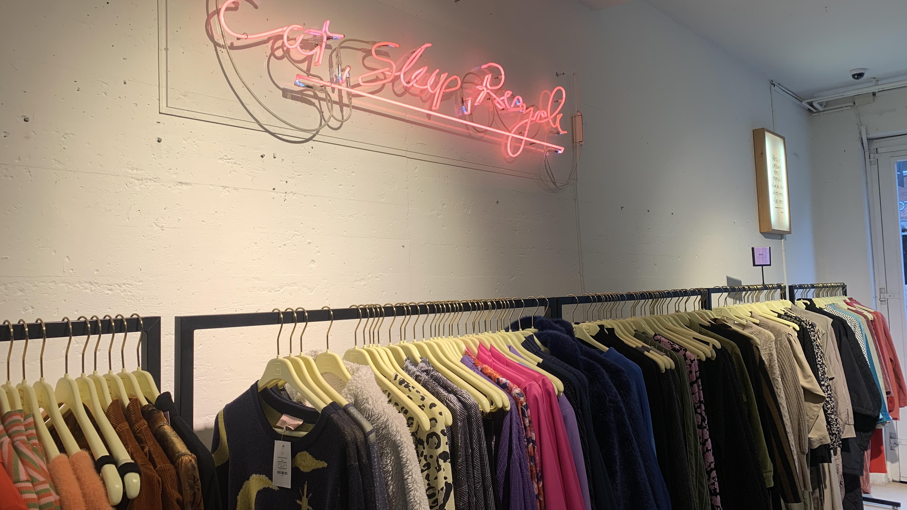

Duurzaamheid
Voor de echte denim liefhebber staat er hier wat informatie over wat nou de perfecte vintage denim is omtweedehands te kopen.
Wat is fast fashion?
Fast fashion is een benadering van mode waarbij kleding snel en goedkoop wordt geproduceerd om de nieuwste trends zo snel mogelijk bij de consument te brengen. Het draait om het repliceren van de recentste catwalk- en ontwerptrends en deze snel en goedkoop beschikbaar te maken voor het grote publiek. Het gaat vaak gepaard met massaproductie, lage kosten en frequente veranderingen in collecties om consumenten constant nieuwe opties te bieden. Echter, achter deze snelle consumptie schuilen ook problemen zoals slechte arbeidsomstandigheden, milieuvervuiling en overmatige verspilling van kleding.
Wat kunnen wij eraan doen?
Als je als consument graag zelf een steentje wilt bijdragen aan onze aarde, zijn hier een aantal stappen die je zou kunnen ondernemen:
- Kies voor kwaliteit over kwantiteit: Investeer in tijdloze, goed gemaakte kledingstukken van hoge kwaliteit die langer meegaan en minder snel vervangen hoeven te worden.
- Koop bewust: Denk na over je aankopen en koop alleen wat je echt nodig hebt. Vermijd impulsieve aankopen en laat je niet verleiden door de druk van steeds veranderende trends.
- Ondersteun duurzame merken: Zoek naar merken die zich inzetten voor duurzaamheid, eerlijke arbeidspraktijken en milieuvriendelijke productiemethoden.
- Heroverweeg je relatie met kleding: Verken alternatieven zoals tweedehands winkelen, kledingruil en reparatie van kledingstukken om de levensduur van je kleding te verlengen en verspilling te verminderen.
- Informeer jezelf: Leer meer over de impact van fast fashion op mens en milieu, zodat je weloverwogen beslissingen kunt nemen bij het kopen van kleding.